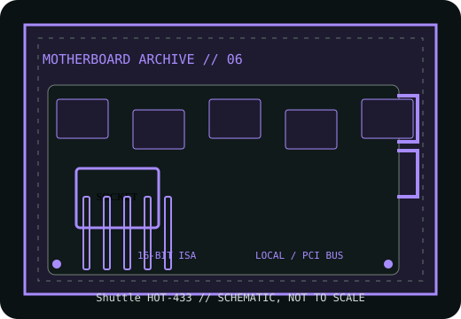

[ HISTORICAL SYSTEM BOARD // IDENTIFIED MODEL ]
Shuttle HOT-433
Socket 3 PCI/ISA 486 motherboard, mid-1990s. This record distinguishes the exact model from related variants and requires revision-matched documentation for service.

IDENTIFY THE PCB: Record model suffix, board revision, chipset markings, BIOS label and date codes before applying any family-level compatibility information.
Model specifications
| Exact model | Shuttle HOT-433 |
|---|---|
| Generation / chipset | Socket 3 PCI/ISA 486 motherboard, mid-1990s; 486 PCI chipset; identify exact chipset and PCB revision from the board and manual rather than infer from the HOT-433 family label. |
| CPU socket / processor | Socket 3 486SX/DX/DX2/DX4 family within the board revision’s supported voltage, clock and multiplier ranges. |
| RAM technology / capacity | 72-pin SIMM FPM DRAM; published family capacity reaches 128 MB, subject to SIMM density, parity and manual-defined bank population. |
| Form factor | Baby AT. |
| Bus, slots & I/O | PCI and 16-bit ISA expansion; IDE, floppy, serial, parallel and keyboard interfaces. Port headers and slot counts should be compared with the exact HOT-433 board layout. |
| Jumpers / BIOS compatibility | BIOS revision and CPU support are board-specific; use the HOT-433 manual for voltage, frequency and multiplier jumpers, and retain the installed ROM identity. |
Jumper, BIOS & compatibility notes
Do not apply HOT-433 jumper tables to similarly numbered Shuttle HOT boards. Confirm printed model/revision and manual issue before CPU, memory or BIOS substitution.
BIOS revision and CPU support are board-specific; use the HOT-433 manual for voltage, frequency and multiplier jumpers, and retain the installed ROM identity. Matching socket or connector geometry alone does not establish CPU, memory or firmware compatibility.
Safety & preservation
Use ESD handling. Inspect the battery area, SIMM sockets and soldered power connector for corrosion or heat. Record switch/jumper and memory-bank positions; check AT supply pinout and correct P8/P9 alignment before power.
Preserve provenance, original labels, jumpers and test conditions. Photograph the board before repair; avoid aggressive cleaning or desoldering until corrosion and component risks are documented.
Manufacturer and archive manuals
- Shuttle HOT-433 User Manual — ManualsLibArchived 68-page model manual with setup and jumper/BIOS information.
- Shuttle HOT-433 board documentation — The Retro WebArchived model record and supporting original scans; compare board revision.
Archived copies may cover another board revision. Compare manual diagrams and revision identifiers with the physical PCB; do not flash firmware or set voltage jumpers from a related model's manual.